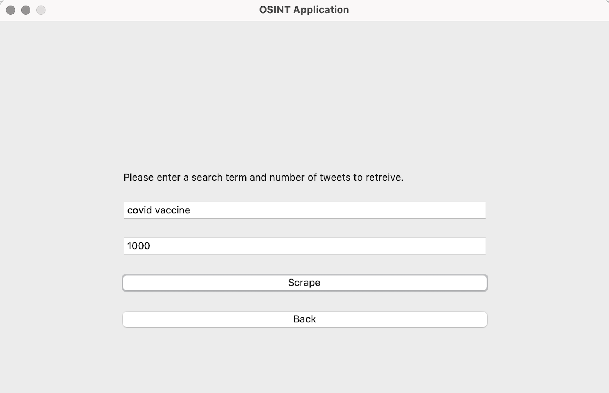
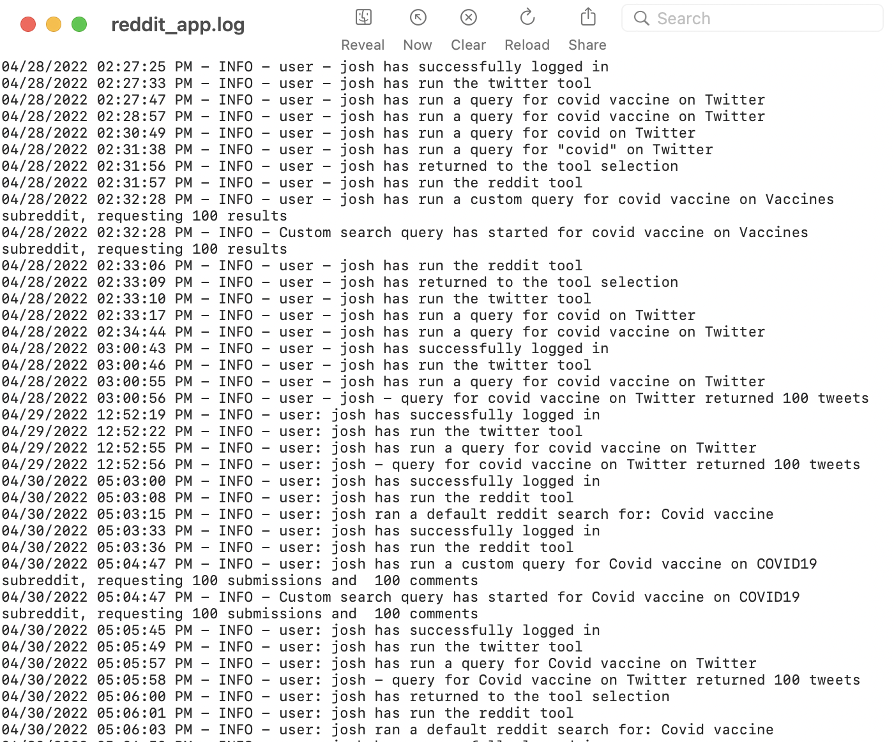
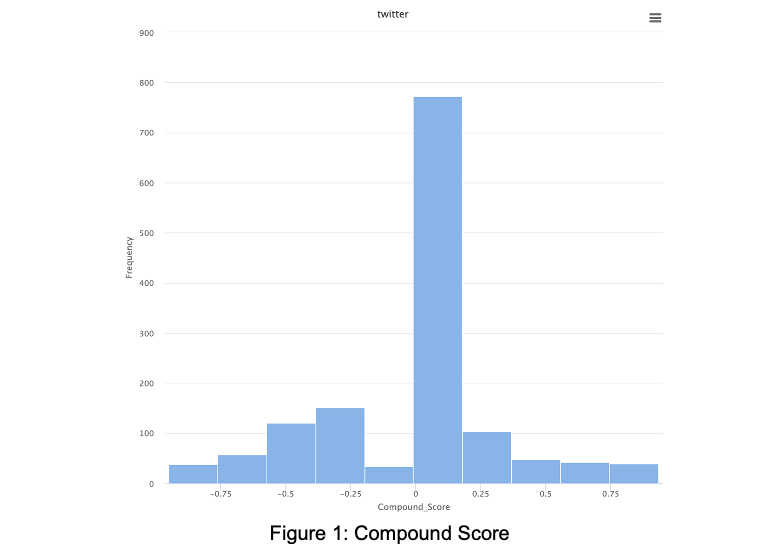
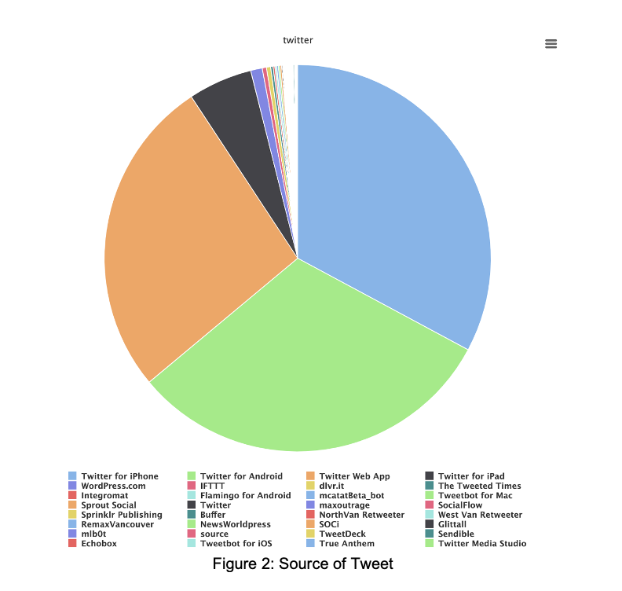
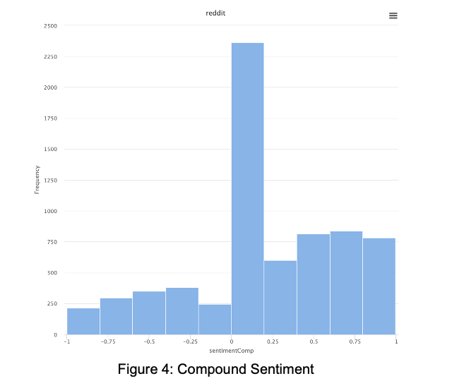
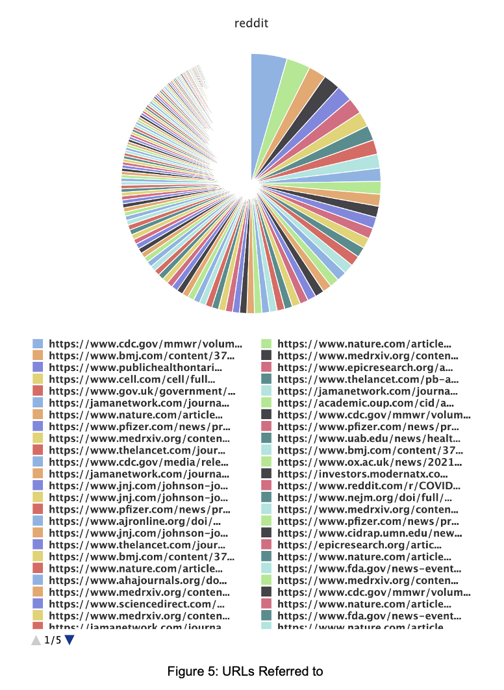
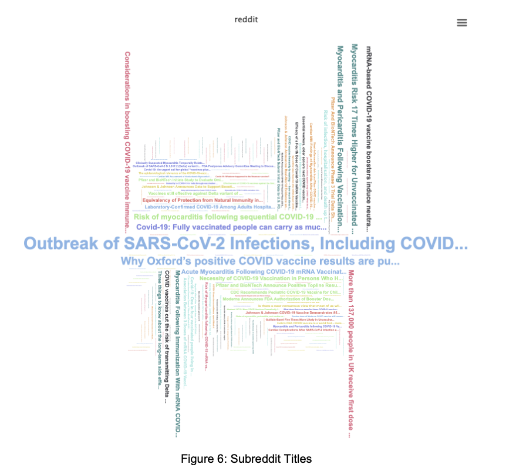
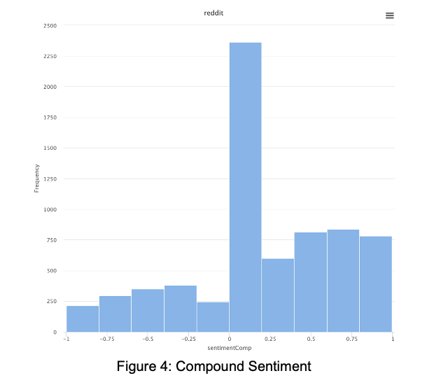
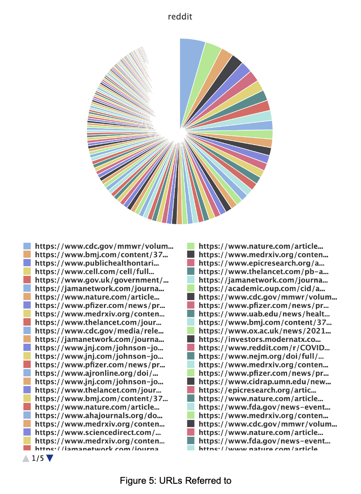
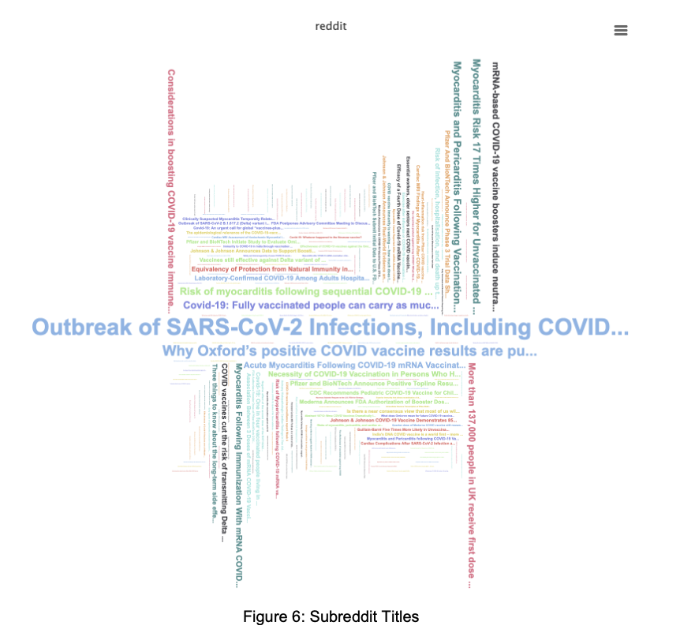

Grace Sopha


CYBERSECURITY, DATA ANALYSIS, DATA VISUALIZATION, PYTHON
T he Cybersecurity Technologies final project's task was to have our group of eight create an open-source intelligence dashboard that scrapes social media posts based on keywords for cybersecurity analysis. The two social media sites used for the dashboard are connected through the Twitter and Reddit APIs, which can be chosen by the user through the GUI. Items associated with the keywords include: author id, tweet/body, date and time, id, device source, positive/negative score and so forth. For our purposes, we used the keywords "Covid vaccine" for our research analysis.
My role as the Project Manager was to plan, assign, quality test and scribe the entirety of the software's creation. Additionally, I was responsible for overseeing the developers' work and assigning tasks based on urgency, definings KPIs, determining risks and mitigation strategies, communicating with stakeholders and so forth. The extensive proposal as well as the analysis of the findings can be located below. Please visit the repository and follow the necessary instructions to try the dashboard yourself!
Case Study
CONTEXT
what problem are you solving?
According to Earthweb in 2023, over 3.5 quintillion bytes of data are generated every single day – a number that has been exponentially growing since the birth of the Internet in the early 1990s. With figure this large, it is virtually impossible to grasp just how much data and residual information each human creates as a byproduct of their daily life.
The objective of this open-source intelligence (OSINT) project was to gather and analyze information from publicly available sources to provide valuable insights and intelligence on unlimited topics across social media sites Twitter and Reddit. By leveraging OSINT techniques, the project aimed to identify and assess emerging risks, vulnerabilities, trends, and potential security breaches that could impact a client's operations. By scrapping data from social media sites based on keywords, the OSINT Dashboard can reveal metadata of each post and its authors and interactions.
why are you solving this problem?
With data growing exponentially each passing day, it is becoming increasingly difficult to filter through mass volumes of information on the Internet. By using Open-Source Intelligence (OSINT) technology, it gives us data scientists and developers leverage in studying behaviors, trends, and many other topics on the Web. Benefits of utilizing OSINT technology are accessibility, cost-effectiveness, versatility, volume, and much more.
what was your role?
For the OSINT project, I lead a team of eight ITM students to produce a dashboard created with Python, designed to scrape social media post for cybersecurity analysis and data visualization. The two social media sites used for the dashboard are connected through the Twitter and Reddit APIs, which can be chosen by the user through the GUI. Items associated with the keywords include author id, tweet/body, date and time, id, device source, positive/negative score and so forth. For our purposes, we used the keywords "Covid vaccine" for our research analysis.
My role as the Project Manager was to plan, assign, quality test and scribe the entirety of the software's creation. Additionally, I was responsible for overseeing the developers' work and assigning tasks based on urgency, definings KPIs, determining risks and mitigation strategies, and so much more. As the project manager, I was to create a detailed work breakdown structure (Gaant chart) and timeline of the project’s lifecycle. Since we were working hybrid (more so waterfall than agile) it was my responsibility that everyone was carrying out their assigned tasks to move forward. Therefore, I led meeting each week to debrief our team on the status of the project, and what everyone’s tasks were for the next meet.
Following the creation and security testing of the OSINT Dashboard, it was my responsibility to cleanse and analyze the data to present as a visualization. The software used for this project is RapidMiner, taking CSV data to transform into a digestible visual. Having visual analytics attest to be helpful for non-technical stakeholders, providing greater readability. Using the parameters measured from Twitter and Reddit, I created a presentation to discuss the trends and other noteworthy information found from “Covid vaccine” discussions across the two social media sites. The last task I had as the project manager was to lead our final presentation given to our stakeholder and professor.
TARGET AUDIENCE
who is the target audience for your product?
The audience meant to utilize the OSINT Dashboard are primarily for data scientists. As big data becomes more difficult to navigate, tools such as scrappers will become more common to gather information and analyze trends in every sector. In our project, our team focused on “Covid vaccine” to make implications on the public’s perspective of the at-the-time controversial medication. As a security measure, our team also pre-configured admin users that must log in with a specific username and password to use the GUI. Additionally, it is expected the user has prior knowledge of data cleansing and visualization techniques.
how did you learn about them?
As cybersecurity technology and data science students, we already had a premonition of what we would need to be able to create a scraper. It was quite simple, given that our professor gave us examples and requirements of the dashboard. A scraper is used to collect public information on the Internet. These scrapers can be sold as a service by corporations, or produced with OS technology, as our team has done.
By using sources such as NIST 800-53 and those provided by our professor, our team accurately planned how to execute the dashboard for cybersecurity analysis. The NIST 800-53 is a framework for security and privacy controls. We found this gave the most clarity as to what actions to take, but as a team we had to discuss exactly how to implement these security controls. The testers on our team would research each security measure we chose to implement and source tutorials of best practice we can follow.
what key things are important to know about them?
An important feat to note of OSINT Dashboard users is that it is not a tool designated for all demographics. As the application was made with our team’s personal needs in mind to succeed in the project, we included only what the stakeholder approved of (ability to choose social site, search by string). As mentioned prior, only admin users with designated usernames and passwords may be permitted to use the OSINT Dashboard. Users should also have a rich understanding of data sciences and its methods, such as cleansing, policies, visualization and so on.
FINAL OUTCOME
what did the final design look like?
The two social media sites used for the dashboard are connected through the Twitter and Reddit APIs, which can be chosen by the user through the GUI. Items associated with the keywords include author id, tweet/body, date and time, id, device source, positive/negative score and so forth. For our purposes, we used the keywords "Covid vaccine" for our research analysis. Once the data has been scrapped, it is exported to a CSV, which can then be transformed and loaded into any data visualizing software, such as RapidMiner or Tableau. All activity is recorded to a log for IAM security purposes.
 what did success look like for your project? did you achieve them?
As required by our stakeholder (professor), there must be a dashboard GUI that allows the user to scrape metadata based on specific keywords of the team’s choosing on a two given social media sites. Using the information (CSV) obtained in the scrape, the team must use ETL processing of the data to visualize results and analyze the results. Lastly, the team will present the findings to the stakeholder and submit all deliverables. Deliverables include a WBS Schedule, Project Success Criteria, Cost Evaluation, Communication Management Plan, Risk Management Plan, Software Configuration Management Plan, and more. The presented intel data are as shown:
  





In the short month developing, our team of eight successfully met all guidelines for the OSINT Dashboard. Our team employed web scraping techniques and manual monitoring to collect data from two online sources. This included monitoring social media platforms and forums. The collected data was stored in a centralized repository for further analysis. We applied data validation techniques to filter out unreliable information, like bots and gibberish. Relevant data points were then analyzed to identify patterns, trends, and potential threats. Advanced analytical tools and algorithms were used to perform sentiment analysis associated with the collected data. Lastly, we created a log that tracks all user activity on the app, which is sent to a text file for readability.
what would you do next if you had time? what did you learn?
If our team had more time, a priority would be to clean up the GUI to make a more aesthetic dashboard experience for our users. Currently, the application is using the default Python Tkinter interface with little to no styling. Perhaps we would create a color-coded GUI for the Reddit and Twitter interface to indicate which site is being used. As for the analysis, it would’ve been ideal to create a proposed action based on the intel data. With the requirements given, our professor only demanded we make inferences behind the data. In a corporate case, it is assumed that the data collected would be used to influence future behaviors that help the organization grow.
Overall, my team and I learned the importance of collecting real time data to lead us to informed decision-making. The intelligence reports can empower a client's security and risk management when it comes to resource allocation, incident response, and risk mitigation strategies. Furthermore, an organization can use this insight to gain a comprehensive understanding of their threat landscape, including key actors, tactics, and target areas, which enhanced their overall situational awareness. By using OSINT strategies, we as developers and scientist save on cost, resources, and time.
HIGHS & LOWS
what challenges did you face during your project? how did you approach those challenges?
Challenges of this project mainly revolved around executing and verifying all of items chosen from the NIST 800-53 Framework. As part of the planning process, our team discussed what security tests we should implement into our software. This took quite a bit of time as we had to be realistic about what we could achieve in the last month of our semester. Once we chose those tests, in addition to our required ones, the rest of the time was spent building the actual application.
As the project manager, I could say it was a bit overwhelming keeping track of what seven other members were doing to contribute to the project. In all honesty, most times people didn’t do anything due to it being the end of the semester. In my case, it was difficult to try and get other team members to care about this project when they also had three to four other ones they were worried about. To approach this issue, I did my best to meet with members individually according to their schedule. Then, we tried to realistic with what each person could contribute to the project. In the end, some people did more, and some did less. I suppose that is just life! Regardless, I know I did my best to try to get others to do their best as well. In the end, we ended up still being successful, so there is not much to complain about!
what methods did you use to solve them? what did you learn from using those methods?
To solve these hiccups during our project, I felt that as the project manager it was my duty to encourage everyone to actively communicate. Like I said, I did what I could to enable others to contribute what they could during the hectic time of finals. From this, I learned it is important to be compassionate, yet firm. Although some members didn’t put in the same amount of work as others, I did my best to understand we are all humans – during a pandemic I might add – trying to get by. There’s a lot of life outside of a classroom. Especially since we were remote, it was assumed most of us were working part or full-time jobs. Therefore, I felt that it was only right to help as the Project Manager since I was just as capable.
At the beginning, I had also conjured up a risk and threat mitigation spreadsheet to predict any mishaps we’d experience. It was assumed that some people wouldn’t be able to deliver their tasks, so we had agreed we’d help one another out if that time came. So, I became responsible for security tests verifications and creating the data visualizations to wrap up the project. I did not mind it too much because as the PM, I felt that it was inevitable that I would need to help others pull their weight. In the end, it was a good experience for me too! I got to be the Project Manager, Developer, Security Tester, and Data Analyst all in one!
how did you make your decision? how did stakeholders influence your project?
While making decisions, there were guidelines placed by our primary stakeholder (professor). First and foremost, we must have a project plan in place as well as a social contract that all members agree to. Next, the team must create the software that meets the OSINT Dashboard expectations. We were required to have two social media sites represented in a GUI, while following the NIST 800-53 framework, that scrapes data into a CSV based on a string. Finally, the team must analyze the intel data and prepare the findings for a presentation to our stakeholder. In addition, all other preparations (project plan, software) must be submitted as deliverables.
Overall, we did not have to stray far when it came down to making choices. In fact, we had very little room to work with aside from the topic of choice we wanted to scrape. This was a benefit, yet also a pitfall. It was nice since we knew clearly of what had to be achieves. In the same light, it was difficult because we had a mountain of tasks to knock out to be successful. Nonetheless, my wonderful team did our very best to produce our own OSINT Dashboard scraper! Thank you to Dr. Dawson for his guidance in the production of this project!